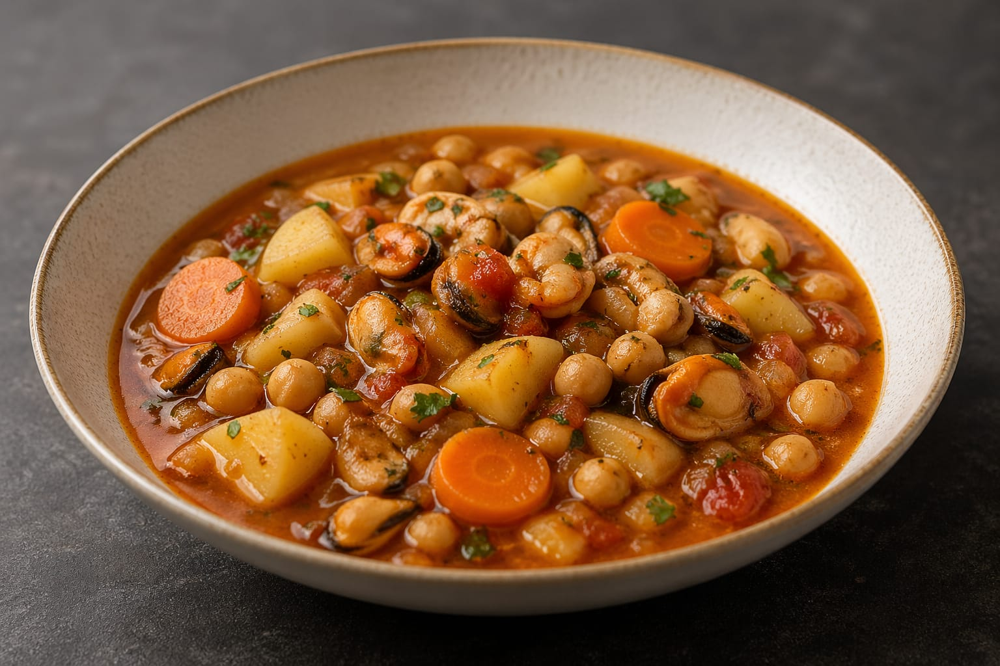

Home
Guiso de mariscos con garbanzos a la Valecita
Prepara esta rica receta con mariscos paa 4 personas, con el toque magico de la shanklish

Ingredientes
- 1 Tarro de mariscos
- 4 Bastones de kanikama
- 1 Cebolla
- 2 Zanahoria grande
- 1/4 de morrón rojo
- 2 Papas grandes
- Aceite de maravilla
- Aceite de ajonjoli
- Vinagre
- 250Grs de garbanzos cocidos
- 500ml de agua hervida
- 200ml de salsa de tomate
- 4 dientes de ajo
- 500ml de caldo de pollo
Preparación
- Para el sofrito: cortar la cebolla, 1 zanahoria, morron y los dientes de ajo en cubitos pequeños
y sofreir en una olla mediana con aceite de maravilla.
- Mientras cocinamos el sofrito picamos 1 zanahoria en rodajas de medio centimetro, las papas en cubos medianos y los
bastones de kanikama en rodajas de medio centimentro.
- Una vez que la cebolla esté un poco caramelizada agregamos el vino (puedes usar vinagre si no tienes vino) y esperamos a que
evapore el alcohol.
- Posteriormente agregamos el resto de verduras cortadas y el kanikama a la olla del sofrito, condimentamos con sal, pimienta y ají color a gusto y revolvemos hasta que suba su temperatura, en ese
momento agregamos la salsa de tomates, el liquido del tarro de mariscos y revolvemos.
- Una vez que hierve agregamos de poco en poco el caldo de pollo esperando a que el liquido espese entre cada tanda.
- Una vez agregado todo el caldo y teniendo una especie de salsa con todos los sabores concentrados agregamos los mariscos del tarro,
el agua hirviendo y dejamos cocinar a fuego medio por 15 min.
- Apagamos el fuego y dejamos reposar la sopa por 10 minutos, mientras, picamos un manojo de cilantro.
- Una vez trancurrido el tiempo servimos la sopa en los platos y agregamos una pizca de cilantro en cada uno.
- Y a devorartela como tango te gusta.